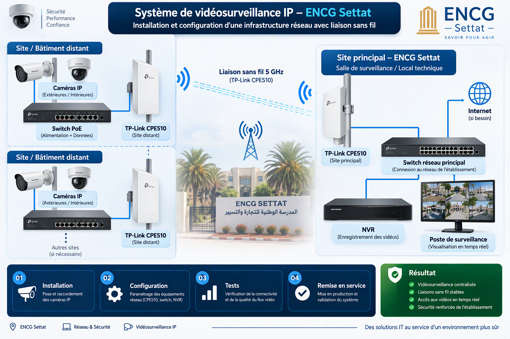

IP Video Surveillance System ENCG Settat
Technical intervention on an IP video surveillance infrastructure integrating network cameras, switching equipment and TP-Link CPE510 wireless links to transmit video streams between different areas of the institution and the central surveillance system.
Context & objectives
Ensure the transmission and centralization of video streams coming from different areas of the institution.
Project context
ENCG Settat has several areas requiring video surveillance. Some IP cameras may be located at a distance from the technical room or surveillance room. The infrastructure must therefore transport video streams from these different areas to the main network and central recording system.
Project objectives
Video surveillance & network architecture
Simplified representation of the transmission of IP camera video streams to the institution's central surveillance area.

Logical infrastructure diagram: IP cameras, local network, 5 GHz wireless links and centralized video streams to the NVR.
Infrastructure components
Main equipment involved in the transmission, centralization and visualization of video streams.
IP Cameras
Capture monitored areas and transmit digital video streams over the network.
PoE Switch
Provides network connectivity for the cameras and, when supported by the equipment, electrical power over Ethernet.
TP-Link CPE510
Outdoor 5 GHz networking equipment used to establish wireless network links between different areas of the institution.
Main Network
Network infrastructure transporting camera streams toward the technical or surveillance room.
NVR
Receives, records and stores video streams coming from the IP cameras.
Surveillance Workstation
Provides live camera visualization and access to recorded video streams.
Video stream path
Logical example showing how a remote camera stream reaches the central system.
How the solution works
From image capture to network transmission, recording and visualization.
Video capture
IP cameras capture the different surveillance areas within the institution.
Network connection
Cameras are connected to the network infrastructure, including network switches.
Remote area
When an area is located away from the main network, a wireless link can transport network data toward the central infrastructure.
5 GHz wireless link
TP-Link CPE510 devices provide wireless network transmission between the relevant areas.
Centralization
Video streams reach the main network and are then transmitted to the NVR recording system.
Surveillance
The NVR handles recording while the surveillance workstation provides access to camera views and recordings.
Work completed
Main technical tasks carried out during the intervention on the infrastructure.
Technical intervention on the cameras and verification of their operation.
Verification and connection of equipment to the network infrastructure.
Intervention on TP-Link CPE510 equipment used to transport network data between different areas.
Verification of communication between the equipment and the main network.
Verification that video streams were correctly received by the recording system.
Connectivity testing, video stream verification and validation of proper system operation.
Technologies & equipment
Main networking and video surveillance technologies used in the infrastructure.
Intervention outcome
Centralized and operational video surveillance
The infrastructure enables video streams from different areas of the institution to reach the central surveillance system. Network and wireless links transport camera data, while the NVR provides recording and makes the video streams available for monitoring.